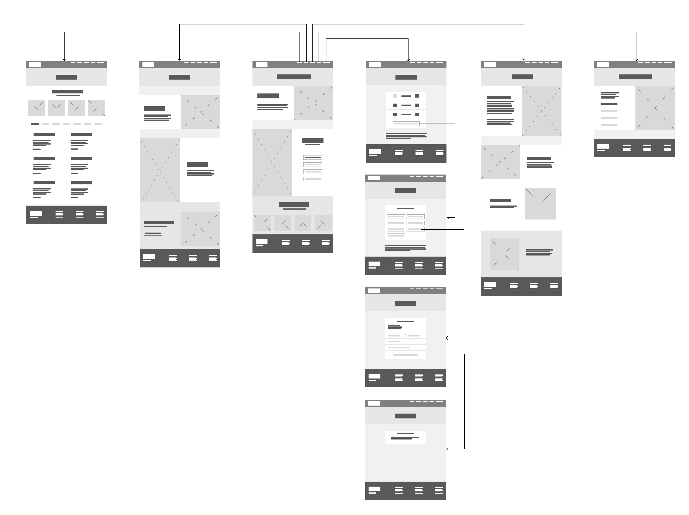

3. Purpose, goals and audience
The purpose of the Opa! website is to present the restaurant as a new, modern Greek restaurant in Trondheim, and to attract new customers. The goal is to
have good navigation and accessibility, and make it easy for visitors to find information about the food, story, and location, and to book a table directly
through the website. In addition, since Opa! is a new restaurant, the main goal is simply to reach anyone in Trondheim who is looking for a place to eat.
The audience therefore includes students, young adults, and residents in Trondheim, as well as tourists interested in Greek-inspired cuisine, and returning
customers who want quick access to opening hours, contact details, the menu, or the booking page.
4. Navigation structure


The navigation structure of the Opa! website is organized as a clique, so that every page can be reached from every other page through a navigation bar
that is fixed at the top of each page. The navbar provides direct links to the Menu, Events, About, and Contact pages. The booking form is placed as a
separate button in the top-right corner of the navbar, visually distinct from the other links, to make it easy to locate for users who want to reserve a table.
We chose a clique structure because users typically visit a restaurant website for different reasons and do not follow a fixed path through the pages.
Some users are primarily interested in the menu or background, and others only want to check opening hours or make a reservation. The footer is fixed at
the bottom of every page, and repeats the most central information such as opening hours, address, and contact details. With the fixed navbar and
footer, the user still has access to all key information and an overview of the site's content, no matter which page they are currently on.
The content on the Menu page is organized as sections within a single page, with the categories Starters, Lunch, Mains, From the Grill, Desserts, and Drinks.
The pages in the booking form are connected in a linear sequence: the user first selects the number of guests, then date and time, then enters contact information,
and is finally shown a confirmation page. We chose a step-by-step structure to keep the form simple and manageable, and to reduce the risk of the user feeling overwhelmed
or leaving fields incomplete.
6. Content
Our website contains 6 seperate pages;
Homepage - index.html
The homepage will be the first page that appear when the users goes into the website.
The homepage will function as an introduction to OPA! and provide users with a first impression of the restaurant.
The page will give the users information about what kind of food OPA! makes and where you can locate the resturant.
The page will also present visual content such as images of the restaurant atmosphere and selected dishes to create interest and reflect the Greek-inspired style.
It will also provide a clear shortcut to the booking page to support reservations. it wil also give a shortcut to the menu, events and contact information, so the user easly can get the information they seek.
Essential contact information will also be available at the bottom of the page for easy access.
The homepage will fulfill the goal to get more costumers, because the good navigation and accesibiltiry will make a good impression and easy access to everything the users may have questions about.
The homepage will be simple with minimal text in order not to overwhelm the audience.
The design will encourage the user to further explore the website by clicking on the shortcuts.
The naviagtion bar is also easy accesable to explroe the website.
The homepage will contain 6 different pictures of the fodd and the vibe of the resturant.
The first picture will have a height of 630px and width of 720px, the secodn picture will have a height of 1045px and width of 720px.
The size of the pictures is to fill out half of the frame.
The last four pictures will have a height of 311px and width of 300px, and will give a sneakpeak of different fun starters.

About - about-us.html
The "About us" page will include information about the restaurant’s concept, background, and inspiration.
It will present OPA! as a modern Greek restaurant in Trondheim and briefly describe its origins and culinary style.
This page will provide an inspiring story about how OPA! became a sucessful resturant, and therefore fulfill the goal of attracting more costumers.
This page will have three different old photos of OPA!`s story.
This will include two pictures with height 720px and width 630px, and a third picture with height 1045px and width 720px.

Menu - menu.html
This page will present the restaurant’s food and drink offerings and their prices.
The menu page will be organized into categories such as starters, dinner, special grill, desserts, lunch and drinks.
This will make it easy for the users to click on what they find interesting.
The menu page will have the same four small pictures that was at the homepage, of different fun starters.

Event -
The event page will give the users insight in the resturant special events.
OPA! will have a concept evert friday thats called "grill-fever friday`s".
on this side the users can see the specials the resturant offers on Friday`s.
It will give the users information about the grill menu, prices and discounts as well as when this event happens.
The event side have two pictures of the grill event, with a size of 720px height and 630px width, and 1045px height and 630px width.

Contact - contact.html
The "contact" will include essential information such as email, phone number, instagram account and reservations.
It will also again give the adress information on where to find OPA!.
The side includes one photo of the resturant on the right side, with a size of 1045px height and 630px width.

Reservations - reservations.html
Reservation-flow

1. Choose guests
|

2. Guests selected
|

3. Pick a date
|

4. Date selected
|

5. Pick a time
|

6. Time selected
|

7. Contact info
|

8. Confirmation
|